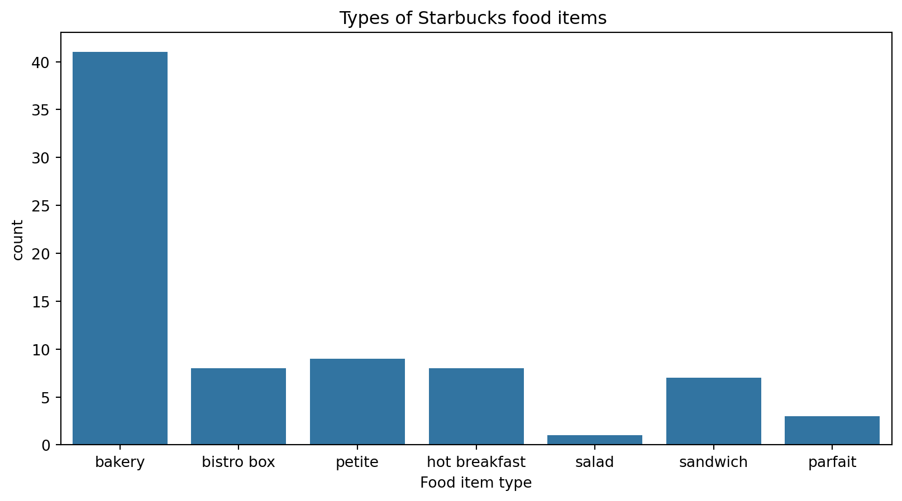
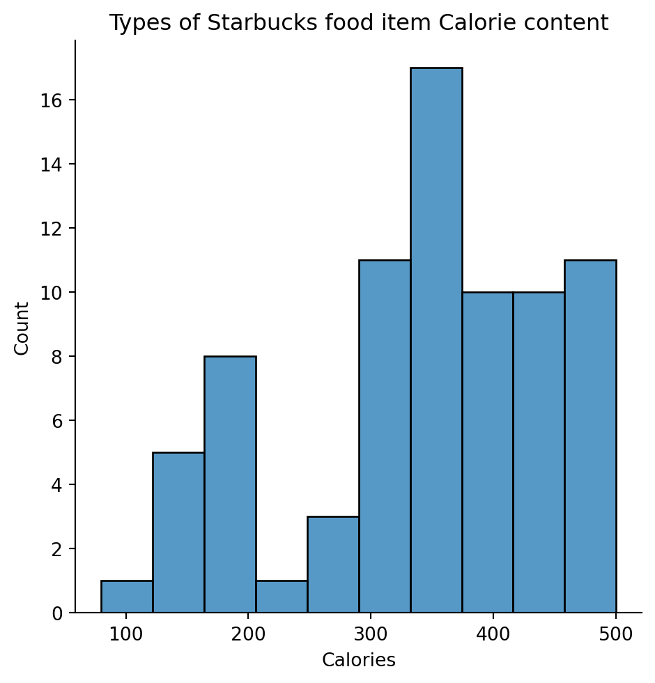
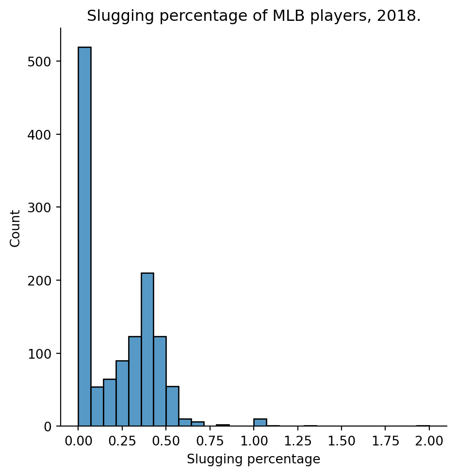
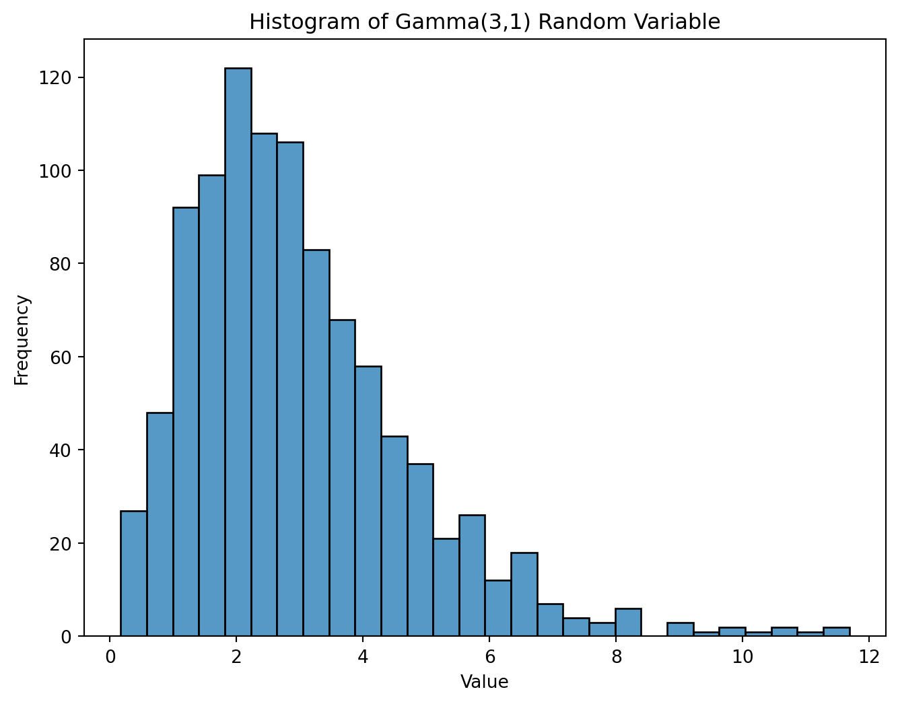

Read 2.1.3 (histograms and shape) and 2.2.1 (bar plots) and 2.2.3 (bar plots, continued)
Goals
Read a histogram or bar chart correctly.
Identify when each plot type is appropriate.
Describe the shape of a histogram using proper vocabulary.
Generate your own histograms and bar charts from data using seaborn.
Note on Accessibility:
Data visualization is the production of charts and graphs that reveal trends and interrelationships to the eye. Although it can be done well by and for low-vision and colorblind users, dataviz is fundamentally visual, so it’s problematic for the blind. Data methods by and for the blind should strongly consider other techniques. Nevertheless, it’s important for both blind and sighted students of statistics to understand the larger discipline. I’ve tried to make these notes useful to everyone, understanding that a histogram might not be.
Bar Charts (aka Count Plots)
A bar chart represents the distribution of a categorical variable, showing how many data cases are in each category. It answers questions like…
How many of each major do we have on campus?
What home languages are spoken in Potsdam, and how many households speak each language?
How many patients are assigned to each nurse?
To make a bar chart, place the categories (majors, languages, nurses) on one axis (normally “\(x\)”). From each, make a rectangular bar proportional to the number in that category. Leave a gap between the bars. Mark and label the other axis so the counts can be inferred.
Bar Charts – example
import seaborn as snsdf = pd.read_csv("starbucks.csv")sns.countplot(data=df, x='type')

Figure 1: Bar Chart for Starbucks food item types
Bar Charts – understanding
Can the bars be rearranged on the \(x\)-axis? Would that change the meaning of the chart?
Do the bar colors matter? Should they be the same or different?
Can a bar chart illustrate the relationship between two different categorical variables? For example, home language related to religious heritage?
Histograms – purpose
A histogram is similar, but represents the distribution of a quantitative variable. It answers questions like
What sorts of GPA’s do students on campus have, and which GPA ranges are most common?
How much do Potsdam households spend weekly on groceries? Which amounts are common, which are outliers, and which are unheard of?
Nurses’ visits with patients take a variety of time. How do the durations of visits vary? Are most visits short, or is there a wide variety of times?
Histograms – method
To draw a histogram, the x-axis is scaled to show the entire range of data values and divided into equal-sized intervals (e.g. 5-10, 10-15, 15-20) called “bins.” Rectangular bars are drawn above each bin, showing how frequently the data values fall into that range. The y-axis is labeled “count” or “frequency.” Tall bars indicate common data ranges, and short bars indicate rare data ranges. Unlike a bar chart, the bars touch each other.
Histograms – example
import seaborn as snsdf = pd.read_csv("starbucks.csv")sns.displot(data=df, x='calories', bins=10)

Figure 2: Histogram for Starbucks food item Calorie content
Histograms – Understanding
Can the bins and rectangles be rearranged on the \(x\)-axis? Would that change the meaning of the plot?
Should the bars be the same color or different colors?
We’re free to choose the number of bins, which effects the width of the bars. How should we decide how many to use?
Is it necessary to label the \(y\)-axis? Why or why not?
Can a histogram show the relationship between one variable and another? For example, can we compare the Calorie counts of various categories of food item (bakery, sandwich, etc) using a histogram?
Histograms and Bar Charts – Comparison
In common:
Data values on x-axis.
Frequency counts on y-axis,
Rectangles whose height shows the count.
Applicable to a single variable only (by default).
Differences:
Bar for categorical, histogram for quantitative.
Bar can be freely rearranged, histogram must be in numerical order.
Bar has gaps, histogram none.
Choosing the right visualization
In each scenario, should we favor a histogram, a bar chart, or neither? Discuss with your group and share your answers with the class.
To understand the frequency distribution of six colors of candy.
To understand the variety of costs of child care in Potsdam.
To reveal a link between religious identity and political party affiliation.
To reveal a link between time spent studying and course grade.
To visualize the variety of total bill prices at a given restaurant.
To show an answer to the question: How many speakers of each language do we have in this classroom?
Histogram sense – modality
A distinct peak or hill in the histogram shows a broad range of common values. A histogram is unimodal if it has one main peak, bimodal if it has two, trimodal if it has three, etc.
Unimodal
sns.displot(data=df, x='poverty')
Figure 3: Histogram – counties’ poverty rates
Bimodal
sns.displot(data=df, x='SLG')

Figure 4: Histogram – MLB players’ SLG
Histogram sense – skew
Skew is an asymmetry showing a longer, heavier tail on one side than the other.
The average value (or mean) of a data variable can be read from its histogram. The mean is the center of mass. Imagine balancing the entire histogram (all rectangles as one unit) on your finger from below. The balance point is the mean.
Below is a histogram for a “Gamma(3,1)” random variable. Describe its modality, its skew, and its mean as completely as you can. Confer with your group and share with the class.

Figure 8: Gamma(3,1) random variable.
Make your own plots – basic process
Fetch data with !wget
Read data with pd.read_csv
import seaborn as sns
sns.displot or sns.countplot. See slides 6 & 10 of this slide deck.
Jupyter Notebook Example
Your turn! Reproduce the histogram of baseball players’ salaries. the data is in OpenIntro’s “mlb” dataset. Make sure each teammate can achieve their own success at this task. When things go sideways, ask for help! Find a second dataframe you’re curious about, and make another histogram.